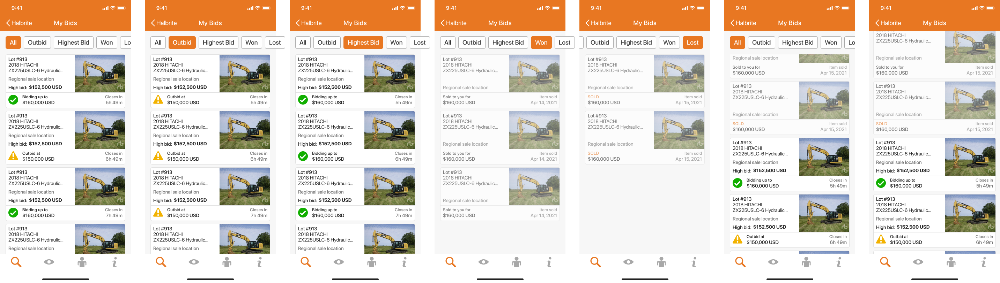

Deliverables
Team
Type
Tools
Timed Auction system provides a user-friendly interface for browsing and bidding on auction items. Utilize filters for sold status, watchlist items, and asset categories, while placing maximum or quick bids with automatic bidding features. Receive bidding notifications and track your activity conveniently within the system.
Problem Space
During the 2020 pandemic, businesses have transitioned from live auctions to timed auctions, aiming to minimize human interaction. However, the complexities of online auctions pose challenges for new user adoption, coupled by a lack of pricing transparency that reduces user trust. Additionally, the limited windows for purchasing restrict users from engaging the auction at their own convenience.
GOALS
- Revenue growth - in 2020, mobile app forwarded a significant amount of revenue and transactions, relative to the website.
- Improved user experience so users will be able to keep track of equipment they are bidding on from a single entry point.
- Eliminate the key pain point of users having to switch between multiple platforms in order to place a bid.
Current User Flow
I analyzed the current user flows and identified the pain points of timed auction bidding in the mobile app. Then, I synced up with the Product Manager to talk about information that they gathered from customer interviews to align on the vision.
Wireframes
First Iteration
In the first image, the labels were too long, I had to account for French translations.
In the second screen, the lack of colour in the existing slide to enable component did not guide the user to the CTA. The excessive emphasis on the number of bidders and closing time disrupts the seamless display of all relevant information in one place, drawing attention up and down the interface. Displaying only the first digit while obscuring the last four digits of users adds no value and fails to differentiate between individuals effectively. Ambiguity arises regarding the identification of Lot 42 and its corresponding item. The time stamps are taking up valuable screen real estate.
The general feedback emphasized the need to structure the layout with clear hierarchy in both labels and text. Additionally, the suggestion was made to integrate native components to enhance the app's speed, especially crucial for a time-critical product.
Final Features
Users are able to place max bids or incremental bids right from the mobile app without directing them to a browser to place a bid.
My Bids
Users are able to track their bidding activities seamlessly right from their mobile device.
After Thoughts
The integration of timed auctions into the mobile app eliminates the need for users to switch between platforms when placing bids, effectively addressing a significant user pain point.
The 'out of app Timed Auction' Call to Action (CTA) remains in place. If we consider removing this CTA in the future, it is essential to ensure that we offer all the information available on the web to enable users to make well-informed decisions.
Improvements: The search result cards should display timed auction information, including the current high bid and remaining time, eliminating the need for users to click into each product to access this crucial information. Additionally, there is a need to improve the hierarchy within the card component to improve Scannability.